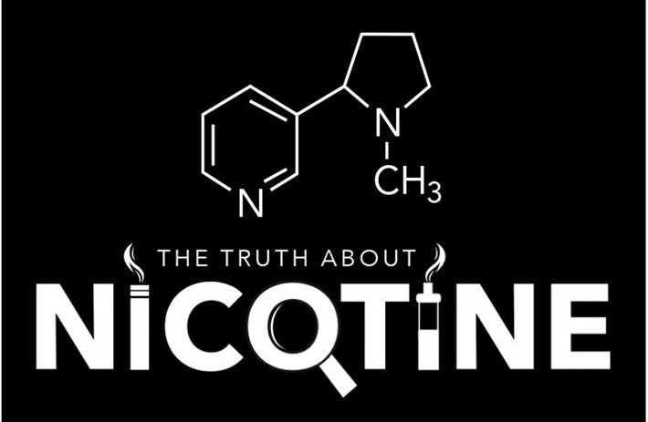

Infographic: The Truth About Nicotine

A brilliant piece of design work from Rik Cheetham for the VIP blog. The post examines the effects of nicotine of the human body and on the environment. It also highlights some of the differences between smoking and vaping.
This is the second infographic project that Rik and I have collaborated on and our burgeoning alliance is getting more interesting and fruitful by the day.
Follow the link below to see the work, a full transcript and a quiz we added to the post using Apester.